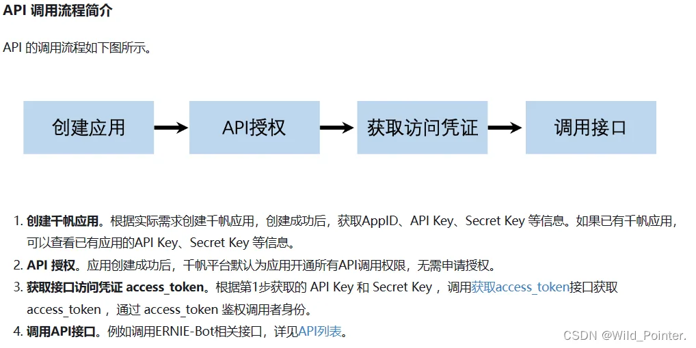
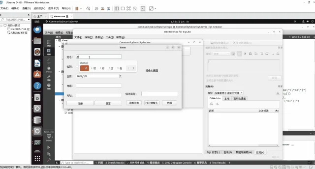
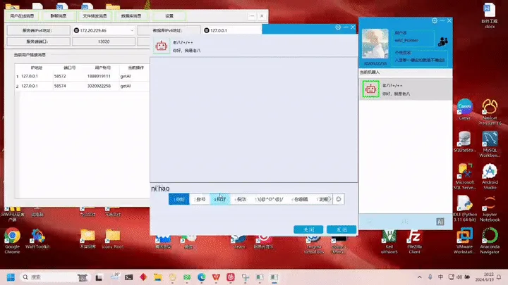

// 你好，我是 WildPointer
一枚野指针，
指向未被定义的地方。
0x00
本期精选
Featured Essay按专栏阅读
0x01
文章索引
Index of Writing共 102 篇文章，按发布时间排序
- 001技术书籍精读笔记：程序员的自我修养-链接，转载与库（陆）技术书籍精读笔记10 分钟
- 002深入浅出VTK：VTK的基本概念及其入门项目讲解深入浅出VTK7 分钟
- 003高效工具实战指南：Procexp64进程资源管理器高效工具实战指南4 分钟
- 004项目实战：使用Windows API实现程序性能监控项目实战11 分钟
- 005Python量化交易：全景目录Python量化交易2 分钟
- 006项目实战：编写CMakeLists管理Qt+OpenCV项目项目实战12 分钟
- 007深入浅出VTK：使用Visual Studio配置VTK环境并编写示例深入浅出VTK10 分钟
- 008C++：全景目录C++2 分钟
- 009C++：内存顺序(Memory Order)的概念以及使用C++16 分钟
- 010高效工具实战指南：DependenciesGui依赖查看工具高效工具实战指南2 分钟
- 011高效工具实战指南：从零开始编写CMakeLists高效工具实战指南17 分钟
- 012高效工具实战指南：Beyond Compare文件比较工具高效工具实战指南2 分钟
- 013高效工具实战指南：Motrix多合一下载工具高效工具实战指南1 分钟
- 014Debug调试之道：YunShellExtV164.dll导致的程序效率降低Debug调试之道15 分钟
- 015深入浅出VTK：全景目录深入浅出VTK2 分钟
- 016深入浅出VTK：编译并使用VTK深入浅出VTK4 分钟
- 017环境配置指南：配置并使用Doxygen文档生成工具环境配置指南2 分钟
- 018数据结构与算法精解：时间序列降采样算法LTOB数据结构与算法精解8 分钟
- 019深入浅出OpenCV：查阅OpenCV的实现源码深入浅出OpenCV3 分钟
- 020环境配置指南：全景目录环境配置指南2 分钟
- 021环境配置指南：配置并使用Vulkan工具库环境配置指南3 分钟
- 022项目实战：使用QCustomPlot实现多窗口绘制数据(支持GPU加速)项目实战6 分钟
- 023环境配置指南：编译并使用Freeglut工具库环境配置指南3 分钟
- 024深入浅出OpenCV：编译并使用OpenCV深入浅出OpenCV7 分钟
- 025高效工具实战指南：CMake构建工具高效工具实战指南2 分钟
- 026Python实战派：安装配置Python环境Python实战派2 分钟
- 027Wild_Pointer.博客：全景目录Wild_Pointer.博客2 分钟
- 028高效工具实战指南：CppCheck静态代码检查工具高效工具实战指南2 分钟
- 029大模型实战指南：全景目录大模型实战指南2 分钟
- 030高效工具实战指南：Notepad++文本编辑器高效工具实战指南1 分钟
- 031高效工具实战指南：全景目录高效工具实战指南3 分钟
- 032高效工具实战指南：Everything文件搜索工具高效工具实战指南3 分钟
- 033技术书籍精读笔记：全景目录技术书籍精读笔记2 分钟
- 034深入浅出OpenCV：全景目录深入浅出OpenCV2 分钟
- 035Debug调试之道：全景目录Debug调试之道2 分钟
- 036项目实战：全景目录项目实战2 分钟
- 037数据结构与算法精解：全景目录数据结构与算法精解2 分钟
- 038C++高并发内存池实战：全景目录C++高并发内存池实战2 分钟
- 039源码剖析：全景目录源码剖析2 分钟
- 040设计模式实战精讲：全景目录设计模式实战精讲2 分钟
- 041OpenCL：全景目录OpenCL2 分钟
- 042Python实战派：全景目录Python实战派2 分钟
- 043Qt：全景目录Qt2 分钟
- 044深入浅出OpenCV：简析单目相机模型中的针孔模型深入浅出OpenCV4 分钟
- 045Qt：避免QRunnable和QObject多重继承Qt6 分钟
- 046Debug调试之道：Unicode编码中的零宽空格0x200BDebug调试之道3 分钟
- 047大模型实战指南：面向Qt/C++开发工程师的提示词（附Trae示例）大模型实战指南10 分钟
- 048技术书籍精读笔记：程序员的自我修养-链接，转载与库（伍）技术书籍精读笔记4 分钟
- 049Debug调试之道：使用Windows API排查程序的线程泄露Debug调试之道13 分钟
- 050技术书籍精读笔记：程序员的自我修养-链接，转载与库（肆）技术书籍精读笔记3 分钟
- 051技术书籍精读笔记：程序员的自我修养-链接，转载与库（叁）技术书籍精读笔记5 分钟
- 052技术书籍精读笔记：程序员的自我修养-链接，转载与库（贰）技术书籍精读笔记11 分钟
- 053技术书籍精读笔记：程序员的自我修养-链接，转载与库（壹）技术书籍精读笔记10 分钟
- 054Debug调试之道：WinDBG分析Dump文件汇总Debug调试之道3 分钟
- 055Debug调试之道：编译qBreakpad并使用其生成Dump文件Debug调试之道5 分钟
- 056Debug调试之道：Dump文件的生成(附Qt示例)Debug调试之道9 分钟
- 057高效工具实战指南：初步认识WinDbg和dump文件高效工具实战指南4 分钟
- 058OpenCL：浅析CL内核程序接口函数OpenCL24 分钟
- 059OpenCL：了解OpenCL模型到编写第一个CL内核程序OpenCL14 分钟
- 060技术书籍精读笔记：C++ High Performance技术书籍精读笔记12 分钟
- 061源码剖析：STL中关联式容器之map源码剖析9 分钟
- 062源码剖析：STL中关联式容器之set源码剖析8 分钟
- 063源码剖析：STL中红黑树（RB-tree）源码剖析18 分钟
- 064源码剖析：STL中树的导览源码剖析2 分钟
- 065项目实战：基于OpenCV的社区安防系统项目实战2 分钟
- 066Qt：C++与Python混合编程Qt3 分钟
- 067项目实战：基于Qt的智能即时聊天室项目项目实战3 分钟
- 068高效工具实战指南：从零开始入门GDB高效工具实战指南7 分钟
- 069Python实战派：NumPy（下）Python实战派7 分钟
- 070高效工具实战指南：从零开始入门Makefile高效工具实战指南7 分钟
- 071Python实战派：NumPy（中）Python实战派7 分钟
- 072高效工具实战指南：Git从配置到合并冲突高效工具实战指南9 分钟
- 073Python实战派：NumPy（上）Python实战派10 分钟
- 074Linux：动态库和静态库的编译与使用Linux6 分钟
- 075数据结构与算法精解：顺序栈数据结构与算法精解9 分钟
- 076数据结构与算法精解：顺序串数据结构与算法精解9 分钟
- 077数据结构与算法精解：哈夫曼树及其哈夫曼编码数据结构与算法精解10 分钟
- 078数据结构与算法精解：线索二叉树数据结构与算法精解7 分钟
- 079数据结构与算法精解：共享栈数据结构与算法精解4 分钟
- 080数据结构与算法精解：单链表数据结构与算法精解12 分钟
- 081数据结构与算法精解：顺序表数据结构与算法精解9 分钟
- 082数据结构与算法精解：链式队列数据结构与算法精解4 分钟
- 083项目实战：基于TCP协议的视频通话项目项目实战14 分钟
- 084高效工具实战指南：Vim的安装及使用高效工具实战指南7 分钟
- 085源码剖析：STL中序列式容器之list源码剖析15 分钟
- 086源码剖析：STL中序列式容器之vector源码剖析14 分钟
- 087C++高并发内存池实战：PageCache层C++高并发内存池实战9 分钟
- 088C++高并发内存池实战：CentralCache层C++高并发内存池实战10 分钟
- 089C++高并发内存池实战：ThreadCache层C++高并发内存池实战13 分钟
- 090源码剖析：STL中迭代器概念与Traits编程方法源码剖析14 分钟
- 091C++高并发内存池实战：初步了解C++高并发内存池实战8 分钟
- 092源码剖析：STL中空间配置器(allocator)源码剖析18 分钟
- 093设计模式实战精讲：行为型模式设计模式实战精讲30 分钟
- 094C++设计模式(中)：结构型模式设计模式实战精讲15 分钟
- 095设计模式实战精讲：创建型模式设计模式实战精讲14 分钟
- 096设计模式实战精讲：前传设计模式实战精讲2 分钟
- 097高效工具实战指南：MinGW从入门到链接库高效工具实战指南8 分钟
- 098技术书籍精读笔记：Effective C++（下）技术书籍精读笔记20 分钟
- 099Qt：QThread源码源码剖析Qt5 分钟
- 100Qt：调用APIQt9 分钟
- 101Qt：程序调试和界面讲解Qt2 分钟
- 102技术书籍精读笔记：Effective C++（上）技术书籍精读笔记16 分钟
没有找到相关文章，试试其他关键词。
0x02
关于这枚指针
About从原理到代码，从学习到实践。这个博客关注系统编程与底层技术，把源码剖析、技术书籍笔记和项目实战整理为可以持续查阅的学习路径。
// 我在做
系统编程、性能监控、图像处理与工程实践。用可运行的代码验证理解，也记录调试过程和实践反思。
// 我常用
C++、Qt、OpenCV、VTK、Vulkan、Python，以及 CMake、GDB、WinDbg 等开发与调试工具。
// 我相信
动手实践与深度思考。欢迎通过邮件交流技术问题、内容建议和项目反馈。
- 102篇技术文章
- 118,159次原文总浏览（抓取快照）
- 17个专栏目录
- 14个自有项目
开源项目
从桌面应用到图形处理，查看项目介绍、演示和关键源码。

C++ / QMake
CommunitySecurityProject
基于OpenCV的社区安防系统
查看项目 ↗C++
QtMonitor
使用Windows API实现程序性能监控
查看项目 ↗项目文档
Graphic-AI-Studio
一站式图像生成编辑平台
查看项目 ↗项目文档
VTKDemo
使用Qt6和VTK编写的简单Demo
查看项目 ↗C++ / C
LTOBDemo
时间序列降采样算法LTOB示例项目
查看项目 ↗C++ / GLSL
VulKanDemo
Vulkan绘图应用示例
查看项目 ↗C / C++
freeglutDemo
编译并使用Freeglut工具库
查看项目 ↗C++ / C
qCustomPlotDemo
使用QCustomPlot实现多窗口绘制数据(支持GPU加速)
查看项目 ↗QMake / C++
OpenCVTest
OpenCV测试示例以及库
查看项目 ↗
C++ / QMake
AIChatProject
基于Qt框架的智能即时聊天室项目
查看项目 ↗C++
QBreakpadTest
qBreakpad测试项目
查看项目 ↗C++ / C
QtDumpTest
QT程序生成Dump文件
查看项目 ↗C++ / QMake
GPTDemo
Qt 网络接口调用示例项目
查看项目 ↗项目文档
VideoDemo
视频传输Demo
查看项目 ↗关注的开源项目（2 个 fork）
- daily_stock_analysis ↗Fork 项目
- TrendRadar ↗Fork 项目
0x03
实验室
Lab · Small Experiments本站的交互演示：流场、指针群、可变字体与内存格。移动端可横向滑动查看。
E.01 / Canvas
风的形状
两千个粒子在柏林噪声里迷路。
E.02 / Interaction
指针群
三百枚小指针，全都指向你。
Wild
E.03 / Variable Font
柔软的字
拖动指针改变字重与柔度轴。
E.04 / Generative
内存格
一块正在被随机读写的堆。
E.05 / CSS
渐变呼吸
只用 CSS，把 Logo 的尾焰拉成一片晚霞。
交流技术，
分享实践。
欢迎发送技术问题、内容反馈或项目建议。也可以通过 RSS 阅读最新文章。